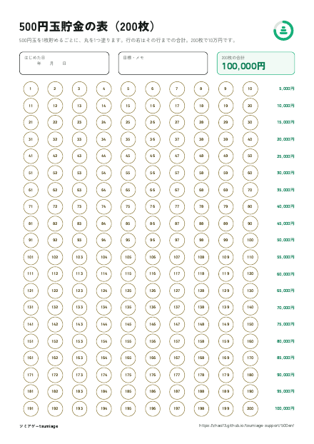

500円玉貯金はいくら貯まる？
手元に来た500円玉を使わずに貯めていく、昔ながらの貯金法です。200枚で10万円。枚数を数えながら進めると、ゴールまでの距離がわかります。
100,000円500円玉200枚の合計
500円玉貯金のやり方
- 目標の枚数を決める。 10万円なら200枚です。下の表は200枚分の丸が並んでいます。
- 500円玉を受け取ったら貯金箱へ。 財布に入れたままにせず、その日のうちに入れると続きます。
- 入れた枚数だけ丸を塗る。 20枚（1万円）ごとに区切りがあるので、数えやすくなります。
- 200枚で10万円。 続けたい人は次の200枚へ。
合計 ＝ 500円 × 枚数 → 500円 × 200枚 ＝ 100,000円
500円玉貯金の表（200枚）
1つの丸が500円玉1枚です。押した枚数の合計が上に出ます。
0円0 / 200 枚（全部で 100,000円）
マスを押すとチェックできます。チェックはこのブラウザにだけ保存されます。
枚数と金額の早見表
| 枚数 | 合計 | 重さの目安 |
|---|---|---|
| 10枚 | 5,000円 | 71g |
| 20枚 | 10,000円 | 142g |
| 50枚 | 25,000円 | 355g |
| 100枚 | 50,000円 | 710g |
| 200枚 | 100,000円 | 1.42kg |
| 400枚 | 200,000円 | 2.84kg |
| 600枚 | 300,000円 | 4.26kg |
2021年より前の500円玉は1枚7.0gです。新旧が混ざると重さは少し変わります。
4つの進め方
受け取ったら必ず入れる
おつりで500円玉が来たら、その日のうちに貯金箱へ。いちばんシンプルな方法です。
1日1枚
毎日1枚ずつ入れます。200日で10万円。両替で500円玉を用意しておくと続けやすくなります。
週の枚数を決める
週3枚なら約67週で10万円。無理のない枚数を決めて、週末にまとめて入れます。
目標から逆算
旅行や買い物の目標額を500で割って枚数を決めます。15万円なら300枚です。
500円玉貯金を続けるコツ
- キャッシュレスで500円玉が手に入りにくいときは、現金で払う日を決めて、おつりで受け取るようにします。
- 貯金箱は開けにくいものを選ぶと、途中で使ってしまうのを防げます。
- 200枚は約1.4kg。棚の上など、落としても危なくない場所に置きます。
- 銀行で入金するときは、硬貨の取り扱い手数料を事前に確認しておきます。

500円玉貯金の表（200枚・A4）
500円玉200枚分の丸が並んだ A4 1枚の表です。10枚（5,000円）ごとに合計がわかるよう、行の終わりに金額を入れています。ダウンロードは無料です。
よくある質問
500円玉貯金は何枚で10万円ですか？
200枚です。20枚で1万円、100枚で5万円、400枚で20万円です。
200枚の重さはどのくらいですか？
2021年以降の500円玉（1枚7.1g）なら約1.4kgです。それ以前の500円玉は1枚7.0gです。
貯めた500円玉を銀行に預けるときの注意は？
硬貨の入金は、枚数によって手数料がかかる銀行があります。事前に利用する銀行の案内を確認してください。
500円玉がなかなか貯まりません。
現金で払う機会を決めておつりで受け取る、週の枚数を決めて両替する、などの方法があります。